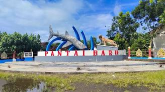
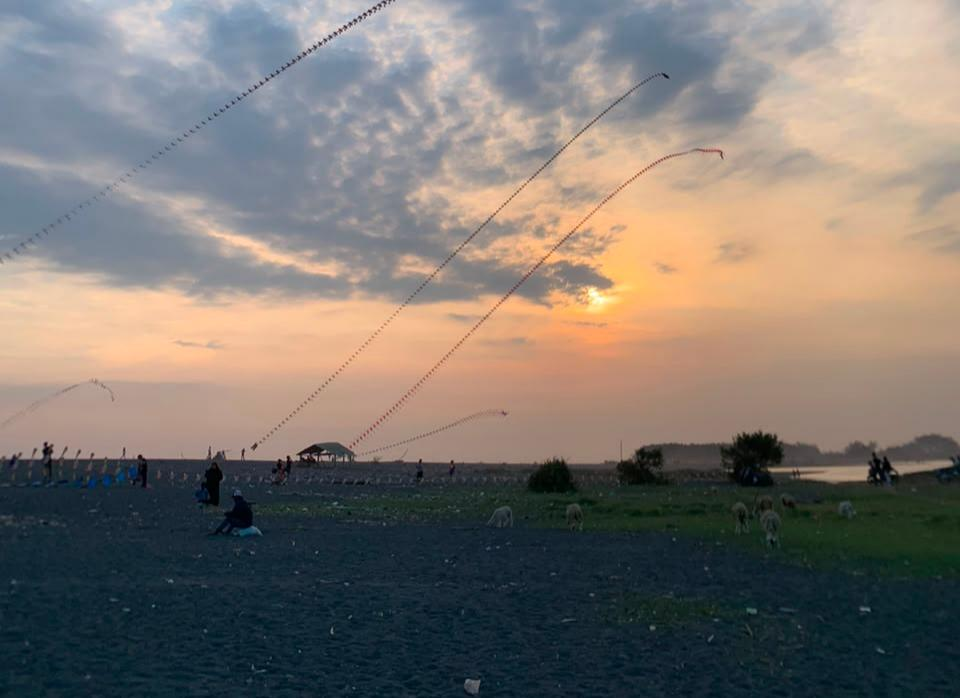

Wisata
Pantai Baru
Wisata pantai rindang dengan deretan pohon cemara udang, cocok untuk bersantai, rekreasi keluarga, kuliner seafood, dan wahana ATV.
📍 Ngentak, Poncosari, Srandakan, Bantul
Direktori Potensi Lokal
Jelajahi keindahan alam, pesona pantai, serta ragam produk unggulan kreasi warga lokal Padukuhan Ngentak.
Objek Wisata

Wisata pantai rindang dengan deretan pohon cemara udang, cocok untuk bersantai, rekreasi keluarga, kuliner seafood, dan wahana ATV.
📍 Ngentak, Poncosari, Srandakan, Bantul

Wisata muara sungai dan pantai dengan pemandangan keindahan alam serta kawasan konservasi penyu dan spot pemancingan.
📍 Ngentak, Poncosari, Srandakan, Bantul
Usaha Warga
Usaha makanan, kerajinan, jasa, pertanian, dan produk lokal warga akan ditampilkan di sini.
Data yang Dikumpulkan